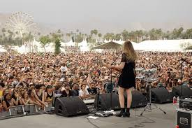

"I hear the music, pounding in my ears like hands to a door. I smell the scents of peoples different perfumes as we crowd together, desperate to get closer to the performer..."
The Este Music Festival started in 1998, and is 3 months long, generally starting in September, then going on 'till mid December. It is a host of many big music names, and up and coming artists. The performances are held in churches, castles, palaces and museums.As well as all of the modern music, the Este Music Festival celebrates it's culture, with old and true music as well.
